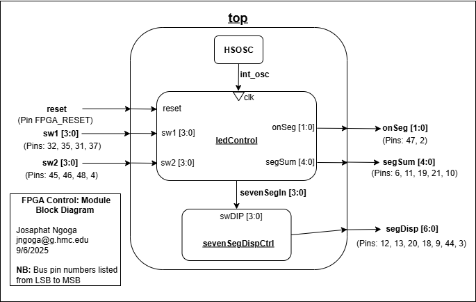
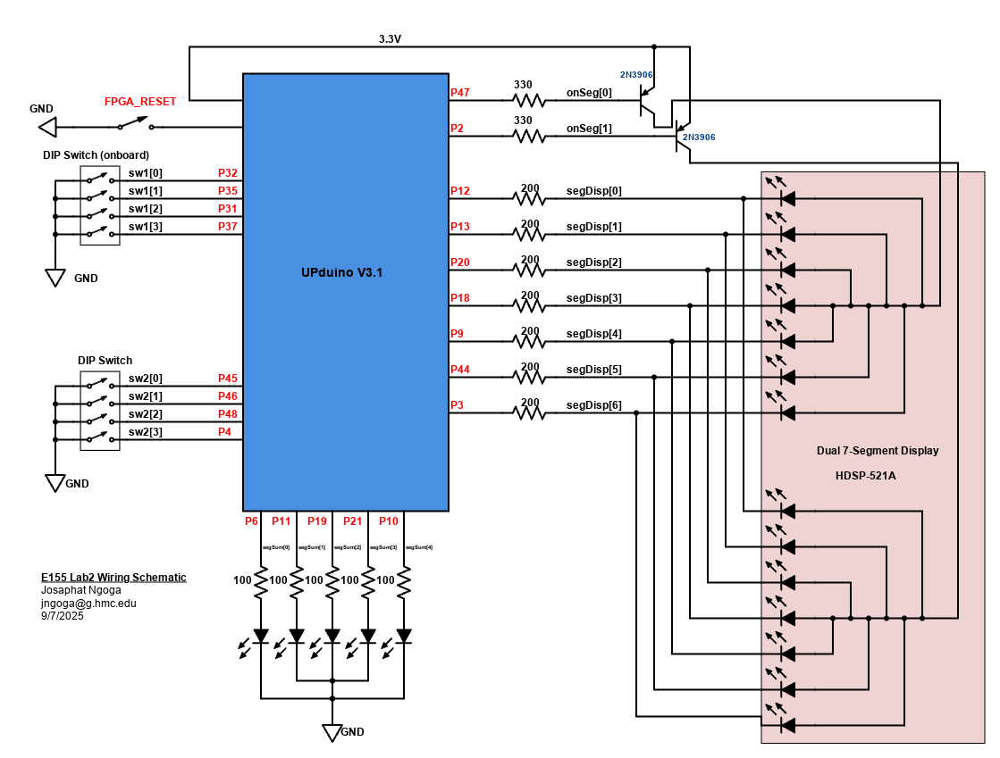
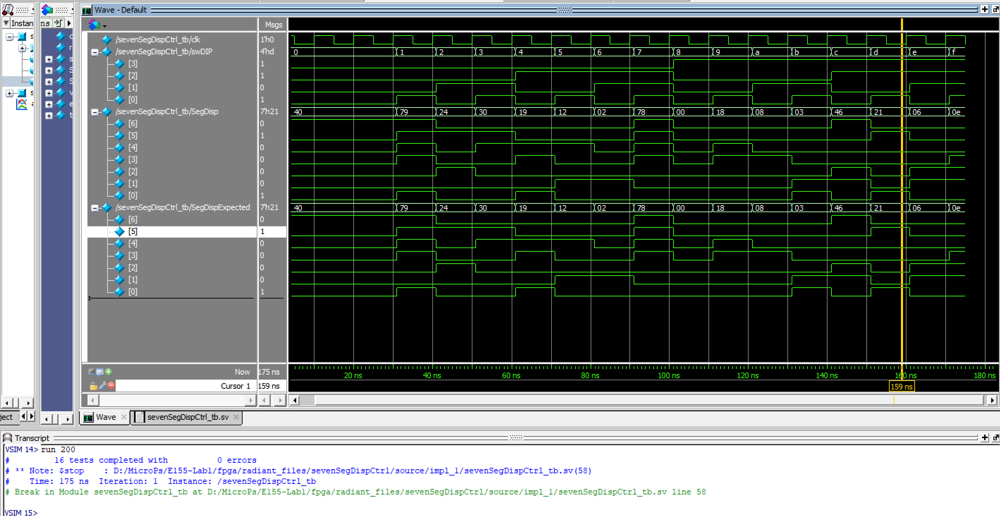

E155 Lab 2: Multiplexed 7-Segment Display
Introduction
In this lab the FPGA was used to drive a Dual 7-segment display with the goal to demonstrate time multiplexing and how to efficiently use the I/O on our FPGA.
Experiment Setup and Design Overview
The main task for the lab was to control the provided HDSP-521A dual 7-Segment display using only 7 pins from our FPGA. The FPGA received two different switch inputs from two different switch blocks, each meant to drive a specific 7-segment display. With limited hardware, the dual 7-segment pins had to share FPGA pins to drive the respective segment displaying the hex equivalent of the switch binary input. The FPGA outputted enablers meant to choose which display has to turn on by driving the respective common anodes HIGH. Each display responded to a respective switch block. Two 2N3906 PNP transistors were used to help drive large currents to the common anodes so as to avoid excessive current draw from the FPGA. An extra task was to show the sum of the two displayed digits using LEDs. These LEDs were also driven by the I/O pins from the FPGA.
Time-multiplexing Logic
Turning on 2 displays that share pins meant that we had to switch so fast that the two displays appear as if they are on at the same time wihout any flickering observed between them. To do this time multiplexing was used. Time multiplexing is a method in digital logic where different elements share common hardware resources for different purposes at different times. We had to implement a timing logic to achieve this task.
The human eye can detect flickering up to \(\sim60 Hz\) (around \(16.67 ms\) per cycle). With two digits, this would mean that each must be active for at least 120 switches per second (60Hz * 2). To ensure “no flickering” switching between the two displays had to be every \(\sim8.3 ms\) or less. I opted to switch at every \(\sim2 ms\) which gives a \(\sim240 Hz\) refresh rate (switching every \(1*10^5\) ticks), which is too fast for the human eye to detect. The module doing the switching leveraged the on-board high-speed oscillator as a clock frequency and used it to implement a counter that switched at the specified times. Another additional procedure to ensure no bleeding happens, all the displays were turned off for a brief time (500 clock cycles) to ensure there is no overlap by letting the transistors fully turn off. During the cooldown, the correct digit is loaded onto sevenSegIn, the display input, which is sent immediately when the counter completes and the dedicated segment turns on.
Display and LED Control Logic
After evey switching a specific display anode high using a 2-bit signal, onSeg[1:0], where MSB showed the state of the left display and LSB, the right display. This signal was multiplexed and used to select which switch input to send to the display that was activated. The left display was controlled by the on-board DIP switch module (sW1[3:0]), while the right one was controlled by the DIP switch component on the breadboard (sW2[3:0]). The selected input was sent to the dual 7-segment display to display the respective digit using the combinational logic module designed in LAB1.
The sum of the displayed numbers was calculated by simply performing binary addition of the two 4-bit switch inputs producing a 5-bit output. Each bit of the sum was relayed to a specific LED, giving us 5 different LEDs to show the binary representation of the sum. The modules to control these elements were written in SystemVerilog to run on the FPGA and to ensure proper communication and signal control, they all followed the hierachy in the block diagram below:

After running the simulation ensuring modules work as expected, the full setup was installed on a breadboard to control the dual 7-segment display and sum LEDs using the following schematic:

As seen from the schematic, the sum LEDs are hooked up to \(100\Omega\) resistors and the 7-segment display to \(200\Omega\) resistors to ensure reasonable (safe) current draw from the FPGA.
The 7-segment display LEDs have a typical forward voltage drop of \(\approx1.70V\). The target current draw per segment was \(8mA\) and the input voltage of \(3.3V\) from the FPGA, I calculated the desired resistor values using \(R = \frac{V_{\text{in}} - V_{f}}{I_{des}}\) obtaining that R should be \(\sim200\Omega\) where worst case scenario with all 14 segments on, the total load current is \(112mA\), much below FPGA rated max. Similar calculation was used for transistors with \(V_{CE}\approx0.7V\) and a target \(I_{BC}\approx8mA\), and the red sum LEDs with \(V_F=1.80\) and target current around \(15mA\). This gives \(\sim330\Omega\) and \(100\Omega\) for the transistors and sum LEDs respectively.
Results and Discussion
Testbench simulation
Setting up the simulation was challenging due to the fact that the time multiplexing counter went on for too many cycles that the assert statements would finish before any switching was done making it hard to test the time multiplexing logic.
My first attempt was to create a fast clock so that counting happens so fast and could see switching. I adjusted my timescale to `timescale 1ns/1ps allowing me to create a clock with period of \(0.2ns\) (\(50GHz\)). This didn’t work as good because the simulation had to run for as long as \(200ms\) just to see a switch cycle. My final solution was to implemenet a parameter SWITCH_COUNT which allowed me to control the number of ticks outside the ledControl module. In my testbench I set SWITCH_COUNT = 1 which essentially switched enablers after 1 tick, equivalent to switching every clock cycle which solved my issue. Each module was simulated individually and running the simulation yielded the following waves:
{kind=link}
{kind=link}
The waves in Figure 3 above show that the the two displays turn on at different times as onSeg[1] and onSeg[1] oscillate oppositely. The waves shows that sevenSegIn chooses sW1 switch input when onSeg[1] is HIGH and sW2 input when switch onSeg[0] is HIGH showing the time multiplexing logic works. The LED sum also worked properly and was verified using the assert statement, executing all with no error returned.

The seven segment display also resopnds as expected.
Hardware Testing
All components were collected and assembled on an extended breadboard following the schematic in Figure 2. Using Radiant programmer, the code was uploaded to the FPGA to test the time multiplexing logic, the sum LEDs, and the 7-segment display. The hardware responded properly as shown in the example video below:
Conclusion
This lab took around 25 hours to complete mainly because I had to go through a lot of debugging processes to fix and setup my testbench to properly illustrate time multiplexing. I solved the issue by learning how to deal with timing and synchronization issues and implementing a solution to modify the counter divider in my testbench. Another major issue was bleeding between the two displays which was caused by faulty adapter and FPGA pins probably damaged or due to poor soldering. I had to resolder most of them as a temporary fix but will look deeper into the issue as the bleeding is at its lowest but not completely gone. The lab was amazing overall and I learnt about time-multiplexing, a skill I believe will be useful in the future labs and projects of this class.
AI Prototype Summary
I used Chatgpt 5 to run the prompt and it gave me the code below. The code was good except that syntheis didn’t work as the LLM was running a line `default_nettype none meant to set the global net parameter to none until all net parameters are specifically defined. Radiant wasn’t happy with that and as usual the LLM faught until it accepted that the best solution is to remove the line producing the next code that synthesized:
//==============================================================
// Hex -> 7-seg decoder, common-anode, segments gfedcba (active-low)
//==============================================================
module seg7_decoder_ca (
input logic [3:0] hex,
output logic [6:0] seg_n // g f e d c b a, active-low
);
always_comb begin
unique case (hex)
4'h0: seg_n = 7'b1000000; // 0
4'h1: seg_n = 7'b1111001; // 1
4'h2: seg_n = 7'b0100100; // 2
4'h3: seg_n = 7'b0110000; // 3
4'h4: seg_n = 7'b0011001; // 4
4'h5: seg_n = 7'b0010010; // 5
4'h6: seg_n = 7'b0000010; // 6
4'h7: seg_n = 7'b1111000; // 7
4'h8: seg_n = 7'b0000000; // 8
4'h9: seg_n = 7'b0010000; // 9
4'hA: seg_n = 7'b0001000; // A
4'hB: seg_n = 7'b0000011; // b
4'hC: seg_n = 7'b1000110; // C
4'hD: seg_n = 7'b0100001; // d
4'hE: seg_n = 7'b0000110; // E
4'hF: seg_n = 7'b0001110; // F
default: seg_n = 7'b1111111; // all off
endcase
end
endmodule
//==============================================================
// Time-multiplex two digits using a single decoder.
// - Common-anode digits, segments active-low (gfedcba).
// - seg0_n drives left digit's 7 segment pins, seg1_n right's.
// - digit_en_n are optional digit enables (active-low).
// - Short blanking reduces ghosting when switching digits.
//==============================================================
module sevenseg_timemux2 #(
parameter int unsigned CLK_HZ = 12_000_000, // FPGA clock (Hz)
parameter int unsigned FRAME_HZ = 1000, // full frames per second
parameter int unsigned BLANK_TICKS = 4 // blanking clocks per switch
)(
input logic clk,
input logic reset, // synchronous, active-high
input logic [3:0] hex0, // left digit value
input logic [3:0] hex1, // right digit value
output logic [6:0] seg0_n, // left digit segments (gfedcba, active-low)
output logic [6:0] seg1_n, // right digit segments (gfedcba, active-low)
output logic [1:0] digit_en_n // {left,right} enables, active-low
);
// ---- timing math (guard against tiny clocks/params) ----
localparam int unsigned HALF_FRAME_TICKS_RAW = (CLK_HZ / (2*FRAME_HZ));
localparam int unsigned HALF_FRAME_TICKS = (HALF_FRAME_TICKS_RAW == 0) ? 1 : HALF_FRAME_TICKS_RAW;
localparam int unsigned SHOW_TICKS_RAW = (HALF_FRAME_TICKS > BLANK_TICKS) ? (HALF_FRAME_TICKS - BLANK_TICKS) : 1;
localparam int unsigned SHOW_TICKS = (SHOW_TICKS_RAW == 0) ? 1 : SHOW_TICKS_RAW;
// Width for tick counter (>=1)
localparam int unsigned TICK_W = (HALF_FRAME_TICKS <= 1) ? 1 : $clog2(HALF_FRAME_TICKS);
typedef enum logic [1:0] {SHOW0, BLANK0, SHOW1, BLANK1} state_e;
state_e state, state_n;
logic [TICK_W-1:0] tick, tick_n;
logic [3:0] mux_hex;
logic [6:0] dec_seg_n;
// One shared decoder
seg7_decoder_ca u_dec (
.hex (mux_hex),
.seg_n (dec_seg_n)
);
// Next-state / timer
always_comb begin
state_n = state;
tick_n = tick + logic'(1);
unique case (state)
SHOW0: if (tick == logic'(SHOW_TICKS - 1)) begin state_n = BLANK0; tick_n = '0; end
BLANK0: if (tick == logic'(BLANK_TICKS - 1)) begin state_n = SHOW1; tick_n = '0; end
SHOW1: if (tick == logic'(SHOW_TICKS - 1)) begin state_n = BLANK1; tick_n = '0; end
BLANK1: if (tick == logic'(BLANK_TICKS - 1)) begin state_n = SHOW0; tick_n = '0; end
default: begin state_n = SHOW0; tick_n = '0; end
endcase
end
// State and counter registers
always_ff @(posedge clk) begin
if (reset) begin
state <= SHOW0;
tick <= '0;
end else begin
state <= state_n;
tick <= tick_n;
end
end
// Which nibble goes into the decoder?
always_comb begin
unique case (state)
SHOW0, BLANK0: mux_hex = hex0;
default : mux_hex = hex1;
endcase
end
// Output driving with blanking
localparam logic [6:0] OFF = 7'b1111111; // all off (active-low)
always_comb begin
// defaults: blanked
seg0_n = OFF;
seg1_n = OFF;
digit_en_n = 2'b11; // both disabled (active-low)
unique case (state)
SHOW0: begin
seg0_n = dec_seg_n;
digit_en_n = 2'b01; // left enabled (active-low), right disabled
end
SHOW1: begin
seg1_n = dec_seg_n;
digit_en_n = 2'b10; // right enabled, left disabled
end
default: begin
// BLANK0 / BLANK1: keep both off
seg0_n = OFF;
seg1_n = OFF;
digit_en_n = 2'b11;
end
endcase
end
endmoduleThesecond prompt worked properly. I received two different files: one top module that istantiates the Lattice iCE40 high-freq oscillator and feeds the mux core, and a second module sevenSegTimeMux. It is a reusable core that takes a clock, two 4-bit values, and uses one sevenSegDispCtrl instance to alternately decode and latch the outputs into two 7-bit buses. This failed to synthesize because of the use of SB_HFOSC module siimilar to last week. To fix it, I had to specifically tell it to use HSOSC hf_osc as demosntrated in my files. However there was another issue where it was calling clk in the code but it didn’t instantiate the variable/logic. When I complained about the error, it would just suggest fixex not in the code the LLM gave me but in the files that I shared. I would have to specifically compalain about it’s code for changes, but still no changes but instead broken recommendations meant to “fix my code.” However, having done the AI Prototype summary earlier, I learned the trick of creating a forced off period while multiplexing the displays.